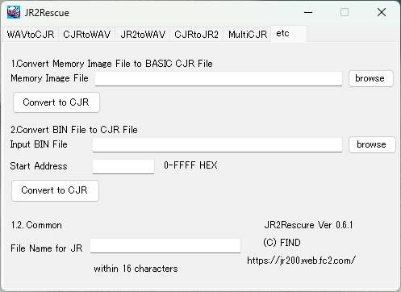

JR2Rescue
JR2Rescue is free software that converts WAV files recorded with programs on JR-200 to CJR format and other formats.
- Operation Environment : Version 0.5.1 and later .net Framework 4.7.2 and later / Version 0.4.2 and older .net Framework 3.5 and later
- Readable WAV file : sampling frequency 22kHz-48kHz, quantize 8bit or 16bit, channel 1 or 2. liner PCM only.
* This program has not been fully tested. I do not intend to have a harmful effect on the user environment, but I will not compensate for any damage. Please use it after understanding.
* Latest Version 0.5.1
https://github.com/find-jr200/JR2Rescue/blob/main/JR2Rescue0_5_1.zip (204KB)
Update Histry
2025.1.4 JR2Rescue 0.6.1 * Publication has been temporarily suspended while a bug is being fixed.
- added WAV to JR2 conversion in WAV to CJR tab. This feature is for running tmq special format tapes.
- removed 22KHz WAV creation function in JR2 to WAV tab (because the frequency shift is large at 22kHz)
- added "Overwrite BaudRate Byte" checkbox in CJR to JR2 tab. Turn this off only when adding tmq special format. Furthermore, the special format can only be read at 600 baud by VJR-200. It cannot be read at 2400baud.
2024.2.18 JR2Rescue 0.5.1 https://github.com/find-jr200/JR2Rescue/blob/main/JR2Rescue0_5_1.zip (204KB)
- added output WAV format (44.1/48kHz, 8/16bits, mono/stereo).
- *Experimental* Added the function to convert JR-300 tapes to CJR and BIN formats.
- changed application icon.
- required .net framework 4.7.2 and later
File Composition
JR2Rescue.exe - Executable file
ja (folder) - Japanese resource folder. If You use JR2Rescue in English environment, remove this folder.
Operation
1. WAV to CJR
Convert wav file to CJR, BIN, JR2 format.

1. Specify the input WAV file, output format, Model and press "Read WAV". If the dialog "failed" appears, WAV analysis has failed, so try changing the saturation and threshold levels.
2. If "Read WAV" is successful, the "Write File" button will be enabled. Select the output format and click the "Write File" button. You can also write different formats in quick succession.
* The JR2 format can also be used with regular formats, but it does not check whether the checksums match, so it is recommended to use it only with special format tapes. Even if a dialog saying "Conversion completed successfully" appears after converting to JR2, it does not necessarily mean that the file can be loaded correctly.
the special format can only be read at 600 baud by VJR-200. It cannot be read at 2400baud.
* Fixed to 2400 baoud(CJR)
Please be sure to check this before use. If baud rate of the CJR file is set to 600 baud, it cannot be loaded with Virtual Panasonic JR200U. Uncheck this only if you want to create a CJR with 600 baud specified for special reasons, or if you have a special format that does not have a baud rate specified.
* Wave Adjustment(JR2)
It correct the loaded waveform to be 1200Hz or 2400Hz. Normally, you should convert it with it checked, but if it does not load correctly, try unchecking it.
2. CJR to WAV
Convert CJR file to WAV file.

Please specify the source file as the input CJR file and the output file as the WAV file, select 600baud / 2400baud , PCM formats and press "Convert to WAV"
3. JR2toWAV
Convert JR2 to WAV

*CAUTION*
JR2 files created with the WAV to JR2 function cannot be converted back to WAV. This is because loud noises may be recorded, and playing them back may damage speakers or your hearing.
Please specify the input file as the input CJR file and the output file as the WAV file and PCM formats, press "Convert to WAV"
* Blank Expansion
If the converted wav file cannot be loaded properly due to insufficient blanks, please check "Blank Expansion". The blank between the program and data will be approximately 5 seconds (if the original blank is longer than that, it will remain as is). However, if the original JR2 file was created without blanks, it will not be expanded even if you check "Blank Expansion". In that case, please recreate the JR2 file with blanks.
4. CJR to JR2
Convert CJR file to JR2 file.

* What's JR2 Format
See about JR2 Format
* About output file
When you specify a file that exist, append to the end.
When you specify a file that does not exist, create new file.
If you want to create a new one, enter the full path in the text box directly, or press "Browse" to select a folder and enter the file name to create in the file name box.
* Add blank
"Add blank" is necessary for those that cannot be loaded normally without adding a blank (e.g. Swashbuckler) . When you convert these games to JR2 format, specify at least 1000 to 1500 bytes or more blanks.
* About Baud Rate
For normal format tapes, there is no difference in accuracy between 600 baud and 2400 baud as long as JR2 files are read by the VJR-200, so there is no advantage to choosing 600 baud except for special experimental purposes.
However, for some special format software 2400 baud will cause a loading error, so it is necessary to create it at 600 baud.
The "Overwrite BaudRate Byte" ON/OFF function is only used when adding a special format CJR. Normal CJRs are turned on and the baud rate specification byte (24th byte of the header block) is rewritten to the specified baud rate, but if a special CJR without a header block is rewritten, the data will be destroyed, so turn this function off.
Normally, be sure to check "Overwrite BaudRate Byte" before use.
5. Multi CJR
* What's Multi CJR
Multi CJR file is the file which merge separated area (e.g. text vram and attribute vram, machine language and user defined character area). However, you can't merge BASIC program (SAVEd file) and Machine Language(MSAVEd file). You can only merge MSAVEd files.

1. Drag and drop the MSAVE CJR file to the list box. To delete a file, select it and press the Delete key. You can drop multiple files, but a BASIC file (=saved file) will result in an error when writing.
2. Specify the multi CJR file name and JR file name, and then click Write Multi CJR File.
6. etc
1. Convert memory image file to BASIC CJR file.
2. Convert BIN file to CJR file.

[TOP PAGE]